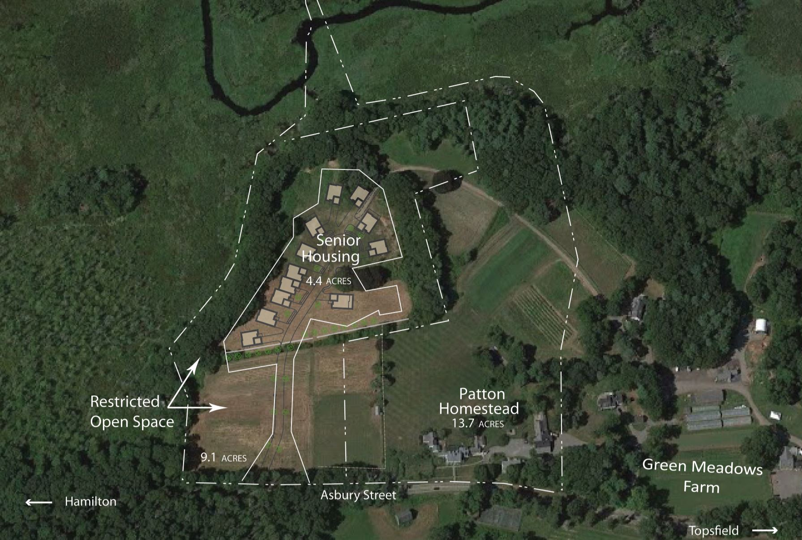

Open Space
This page describes the several components of the open Space that is open to the public at the Patton property.
The first open space is the wide open field that reaches down from the back of the Homestead and extends all the way down to the Ipswich River. This open space will remain exactly as it is now.
The second open space component is the canoe launch that extends into the Ipswich River across from the Topsfield Audubon property. The town is working to create the necessary parking and enhancing access to this canoe launch area, partly in conjuction with the development of the senior housing and partly by reviewing access from around the backside of the Homestead's barn.
The third is the riverwalk that is currently being designed by the Essex County Greenbelt Association in association with the Town. The actual riverwalk will be located mostly on conservation land that is now owned by ECGA, although it will be accessed from the wood road that is owned by the Town of Hamilton. It will be constructed in the summer of 2015.
The fourth component is the field to the left of the house as it is viewed from Asbury Street. Some of that field will be permanently restricted as open space as part of the Senior Housing Special Permit. The rest of the front field will be left open and used in conjunction with future uses of the Patton Homestead.
The last part of the open space is the area that includes the existing wood road that wraps along the Ipswich River. The land extends all the way up the steep hill/cliff to the edge of hte proposed senior housing. The land will be permanently restricted as open space or parkland as part of the special permit.
The Town currently owns, and will continue to own, all of these open spaces

